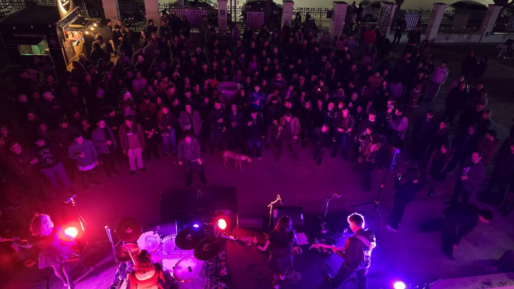
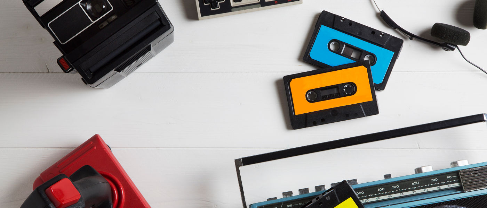

Noticias · Industria
Artistas peruanos entran en la carrera hacia los Latin Grammy 2026
Eva Ayllón, Susana Baca, Tony Succar, Amy Gutiérrez, Dayan Flor y Milena Warthon figuran en la etapa de consideración de la Academia Latina de la Grabación.


Noticias · Escena
Mundano Fest debuta en Lima como nuevo showcase de rock independiente
Entrevista · Diazepunk
Carlos García: “Quien no tiene calle con su proyecto no va a levantar”
Reseña · Álbum
Lorena Blume — Dinamita (2025)

Análisis · Industria
Del cassette al algoritmo: cómo cambió (o no) la dificultad de hacerse escuchar en el Perú
Noticias · Política cultural
Congreso propone que los conciertos den agua gratis al público
Carlos García — Diazepunk
El integrante de Diazepunk cuenta cómo el punk limeño de inicios de los 2000 construyó comunidad con correos y cassettes imperfectos, y por qué el algoritmo de hoy castiga justo lo que esa escena celebraba.
Renzo Lancho — Dale Vuelta
Treinta años después de regalar cassettes para hacerse escuchar, el líder de Dale Vuelta explica por qué el streaming trasladó la dificultad de lo físico a lo virtual sin resolverla.
Arturo Prieto — Río
Desde una azotea en Pueblo Libre en 1979 hasta el rock peruano de hoy: el fundador de Río compara buscar artistas antes y ahora con una ferretería finita frente a un corredor sin fin.
"La música peruana no necesita que la descubra el mundo. Necesita que nosotros la escuchemos primero."
— Decibeles · Lima, Perú